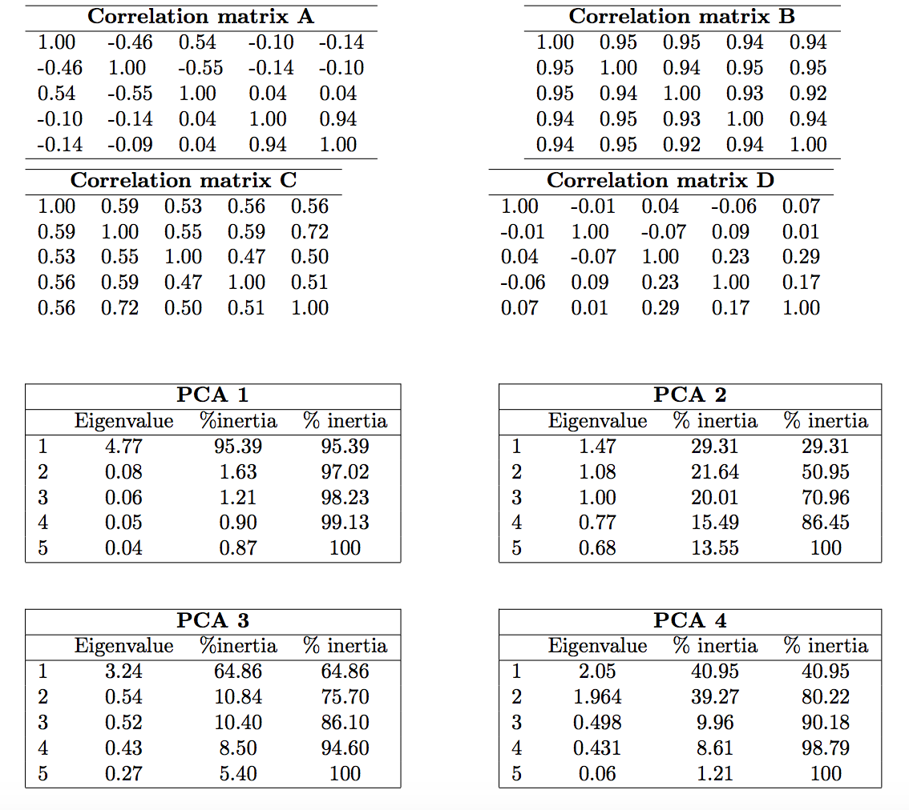
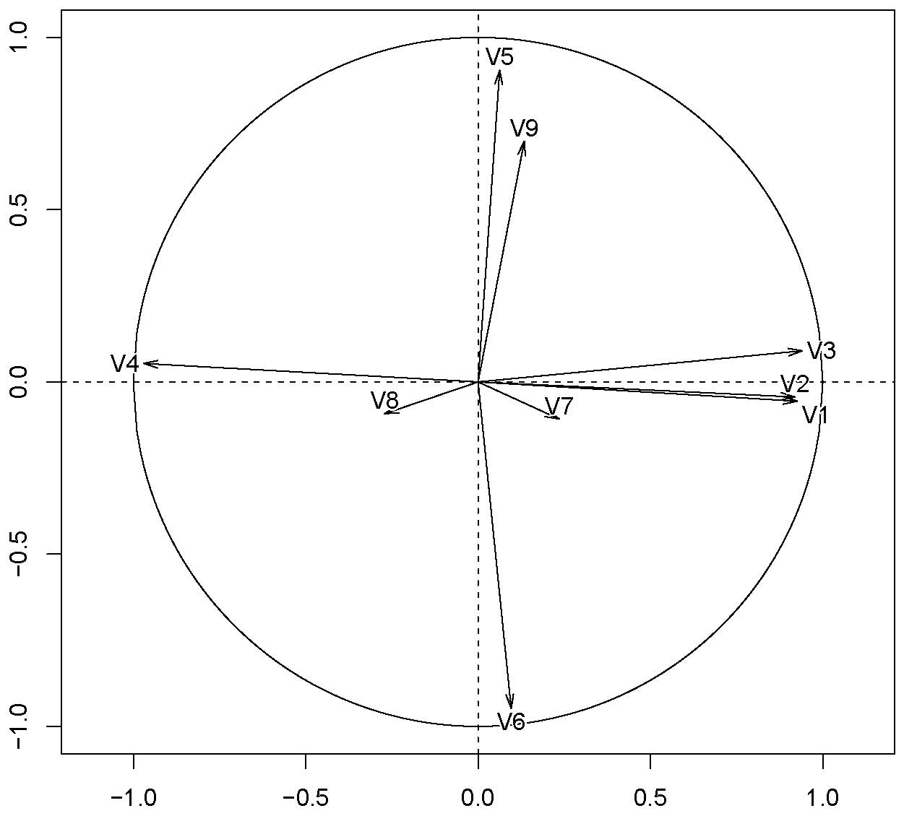

Chapter 9 Principal components analysis
9.1 Lecture
Before starting, you should watch the lecture by François Husson on a practical presentation of PCA. french,english
Principal component analysis (PCA) summarizes a data table where the observations are described by (continuous) quantitative variables. PCA is used to study the similarities between individuals from the point of view of all of the variables and identifies individuals profiles. It is also used to study the linear relationships between variables (based on correlation coefficients). The two studies are linked, which means that the individuals or groups can be characterized by the variables and the links between variables illustrated from typical individuals. More details are in the lecture slides.
To perform PCA, we use the PCA function from the FactoMineR package. A website is dedicated to this package. The code associated to the lecture slides is the following:
library(FactoMineR)
Expert <- read.table("http://factominer.free.fr/docs/Expert_wine.csv",
header = TRUE, sep = ";", row.names = 1)
res.pca <- PCA(Expert, scale = T, quanti.sup = 29:30, quali.sup = 1)
summary(res.pca)
barplot(res.pca$eig[,1], main = "Eigenvalues", names.arg = 1:nrow(res.pca$eig))
plot.PCA(res.pca, habillage = 1)
res.pca$ind$coord; res.pca$ind$cos2; res.pca$ind$contrib
plot.PCA(res.pca, axes = c(3, 4), habillage = 1)
dimdesc(res.pca)
plotellipses(res.pca, 1)
write.infile(res.pca, file = "my_FactoMineR_results.csv")A Shiny interface has been developed for FactoMineR, you should install the Factoshiny package, it may give you an idea of what interfaces you should produce to facilitate the use of the methods you develop.
library(Factoshiny)
data(decathlon)
PCAshiny(decathlon)A very useful package is FactoInvestigate. It generates an automatic report and interpretation of FactoMineR principal component analyses. The main function provided by the package is the function Investigate(), which can be used to create either a Word, PDF or a HTML report.
library("FactoInvestigate")
# Principal component analyses
Investigate(res.pca, file = "PCA.Rmd", document = "pdf_document",
parallel = TRUE)The aim of this package is also to encourage you going further in the interpretation!
Finally, we should mention that there exists a package that has embedded FactoMineR within ggplot2!
library(factoextra)References on principal component methods and on the FactoMineR package: Exploratory Multivariate Analysis by Example using R, Husson, Lê, Pagès (2017), Chapman & Hall Multiple Factor Analysis by Example using R, Pagès (2015), CRC Press.
9.2 Lab
9.2.1 Lecture questions
- When do we need to scale the variables? Simulate and comment:
library(mvtnorm)
Z <- rmvnorm(n = 200, rep(0, 3), sigma = diag(3))
X1 <- Z[, 1]
X2 <- X1 + 0.001*Z[, 2]
X3 <- 10*Z[, 3]
don <- cbind.data.frame(X1, X2, X3)
library(FactoMineR)
res.pca <- PCA(don, scale = F)
res.pcascaled <- PCA(don, scale = T)TRUE or FALSE. If you perform a standardized PCA on a huge number of variables: the percentage of variability of the two first dimenions is small.
A scaled PCA has been performed on 4 data sets. Link correlation matrices and PCA results.

- What is the percentage of variability of the first dimension? The first plane?

9.2.2 Analysis of decathlon data
This dataset contains the results of decathlon events during two athletic meetings which took place one month apart in 2004: the Olympic Games in Athens (23 and 24 August), and the Decastar 2004 (25 and 26 September). For both competitions, the following information is available for each athlete: performance for each of the 10 events, total number of points (for each event, an athlete earns points based on performance; here the sum of points scored) and final ranking. The events took place in the following order: 100 metres, long jump, shot put, high jump, 400 metres (first day) and 110 metre hurdles, discus, pole vault, javelin, 1500 metres (second day). Nine athletes participated to both competions. We would like to obtain a typology of the performance profiles.
The aim of conducting PCA on this dataset is to determine profiles for similar performances: are there any athletes who are better at endurance events or those requiring short bursts of energy, etc? And are some of the events similar? If an athlete performs well in one event, will he necessarily perform well in another?
The data can be found with:
library(FactoMineR)
data(decathlon)Have a quick look at the centered and scaled data, what can be said?
Explain your choices for the active and illustrative variables/individuals and perform the PCA on this data set.
Comment the percentage of variability explained by the two first dimensions. What would you like (a small percentage, a high percentage) and why?
- Comment:
- the correlation between the 100 m and long.jump
- the correlation between long.jump and Pole.vault
- can you describe the athlete Casarsa?
- the proximity between Sebrle and Clay
the proximity between Schoenbeck and Barras
Enhance the graphical outputs with the following options:
plot.PCA(res.pca, choix = "ind", habillage = ncol(decathlon), cex = 0.7)
plot.PCA(res.pca, choix = "ind", habillage = ncol(decathlon), cex = 0.7,
autolab = "no")
plot(res.pca, select = "cos2 0.8", invisible = "quali")
plot(res.pca, select = "contrib 10")
plot(res.pca, choix = "var", select = "contrib 8", unselect = 0)
plot(res.pca, choix = "var", select = c("400m", "1500m"))In which trials those who win the decathlon perform the best? Could we say that the decathlon trials are well selected?
Compare and comment the performances during both events: Decastar and Olympic. Could we conclude on the differences? Plot confidence ellipses or perfom a test:
plotellipses(res.pca)
dimdesc(res.pca)
dimdesc(res.pca, proba = 0.2) To select the number of dimensions, you should have a look at
?estim_ncpwhich performs cross validation as detailed in the lectures slides.